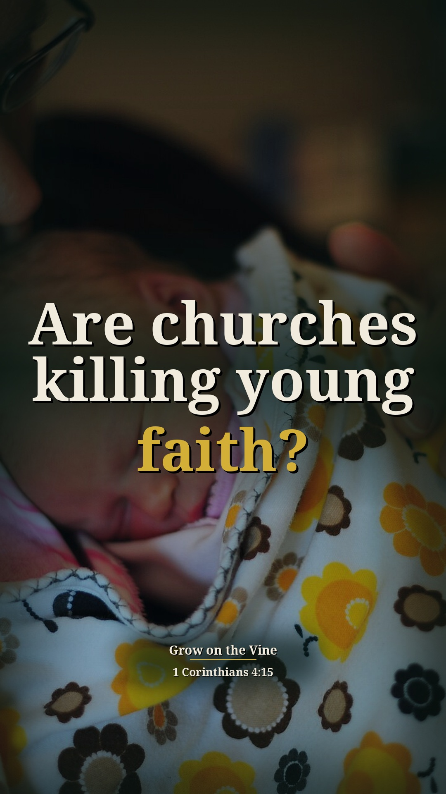
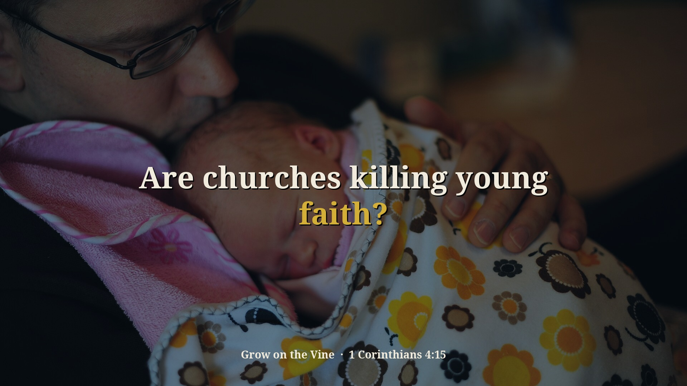

Division Concluded Part 1 — 1 new context Shorts (preview)
Preview only, not posted anywhere. Source: w1apdlEqqmE · Pastor David G. Kincer. New Shorts from passages on sin and other religions that were skipped before. Each one includes the earlier or surrounding part of the sermon that explains why he says it. Each card follows the clip-page order: video → short answer → his words → Scripture (NKJV) → full message.
Are churches killing young faith?
Context included: 18:03–18:47 "I have begotten you through the gospel" (1 Cor 4:15): fathers birth, the gospel births, and from conception there is power to keep growing. That is the picture he is using when he says churches are aborting Christians.
Watch the clip
Our short summary of this clip, not the preacher's exact words
Short answer: He says the gospel births people like conception begins life, with power to keep growing. Just like people abort babies today, churches are aborting Christians, killing them after conception with doctrines and stupid things so they can't grow, and we have no sensitivity for the unborn baby because we have none for the Christian.
Why: 1 Corinthians 4:15: Paul begot them through the gospel; a spiritual father cares for growth, not just making people feel good.
“I have begotten you through the gospel. I've birthed you.”
▶ 18:04
“See, when that egg and that sperm come together, that's just, we call that conception. That's the beginning of life.”
▶ 18:28
“See, and just like people abort babies today, churches are aborting Christians. We're killing them.”
▶ 18:51
“And the reason we don't have any sensitivity for the unborn baby is because we don't have any sensitivity for the Christian.”
▶ 19:18
“It should always be I'm a Jesus boy. I'm a Jesus girl.”
▶ 20:02
1 Corinthians 4:15 For though you might have ten thousand instructors in Christ, yet you do not have many fathers; for in Christ Jesus I have begotten you through the gospel.
2 Corinthians 11:28 besides the other things, what comes upon me daily: my deep concern for all the churches.
Full sermon: Division Concluded Part 1 — full message page


Other title options:
- How does the gospel give birth?
- Why don't we care for new Christians?
YouTube description (draft)
Are churches killing young faith? Read the short answer, the Scripture (NKJV) and the pastor's own words: https://growonthevine.com/clips/are-churches-killing-young-faith/ To see the full message, click here: https://www.youtube.com/watch?v=w1apdlEqqmE&t=1083s He says the gospel births people like conception begins life, with power to keep growing. Just like people abort babies today, churches are aborting Christians, killing them after conception with doctrines and stupid things so they can't grow, and we have no sensitivity for the unborn baby because we have none for the Christian. 1 Corinthians 4:15 (NKJV) Pastor David G. Kincer · Grow on the Vine Music: "Sapphire Isle" Kevin MacLeod (incompetech.com) Licensed under Creative Commons: By Attribution 4.0 License http://creativecommons.org/licenses/by/4.0/ #Shorts #Bible #Jesus